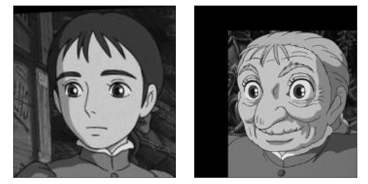
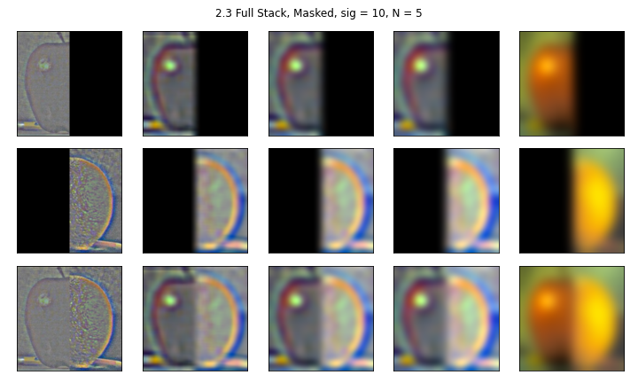

We will discuss filtering and colvolving with a difference operator.
We use the finite difference operator in the x and y to achieve partial differentials. These partials are used to compute the gradient magnitude image, all three of which are shown below:
If we select a threshold, here jusdged to be about 30, and then bringing all non-zero values to one, we get the following edges:
We now will smooth the input image with a gaussian filter before we apply the differential opperator.
For this image, I used a guassian with a sigma = 3 and a size three times that of sigma:
Blurring the image with this filter before applying the derivatives creates the following result: (Note that we had to change our thresholds to a lower value, 10, for these images)
In this filtered image, we can see that the lines are thicker than they were before. We also get more continuous lines, especially in the gradient magnitude image.
We derive a single filter to achieve the same result by first convolving our 2D gaussian of choice with each derivative filter. Importantly, we need to allow the convolution to have "fill" as a boundary instead of "same". The following shows this computed Derivaties of the Gaussian in both x and y:
We can then apply this single DoGG kernel in both x and y, meaning just one convolution calculation per direction instead of two if we reapply this filter to multiple images. When comparing the work of the DoG kernel, it is identical to the two step convolution above.
In this part, we learn to "sharpen" an image by isolating high frequencies and adding them back to the original image. THe amount added back in is determined by the variable "alpha", which scales the isolated high frequencies.
Here we show this process on the provided image:
I prefomed the same sharpening on another image of the Golden gate bridge, thish time with a higher alpha value. It both brings out lines as well as generally brightens the image. This might have to do with our scaling.
Sharpening a previously blurred image doesn't yeild back the original image. In this example, we take a very sharp image of a flower and apply a gaussian filter with sigma of 2. We then try the sharpening algorithm with a gaussian sigma of 4 and an alpha value of 1. the results are below:
It looks like in this process we lose some of our high frequencies for good. The flower isn't able to recover some of its original details, like the internal structure of the center.
In this section, we combined the low frequencies of one image with the high frequencies of another image to create a blended images that looks different up close than farther away. Our first test was with a Man and his pet Cat. Cutting both low and high frequencies off at a sigma of 11, we get the following image:
We can break down each step of the process into the following:
This shows us the frequncies present in each original image, as well as the frequencies present after filtering each. Though the Gaussian isn't perfect, we still see that there "High frequency" image does have less power in the center, and the "Low frequency" filtered image has less extraneous power on the edges, though we do see some cross bars.
I tried this method on other images.
The first was Sophie, from the movie Howl's moving Castle. She undergoes an aging process throughout the film, so I wanted to try to blend her two faces. The orginal images were slightly small:

And I tried combining each as the high or low componenet of the combined image:
I believe I got closest with the image on the left. The details of the older womans face seemed fade in and out with different distances.
I also tried this to blend two different objects. This worked really well!
I played on our motto "Fiat Lux" to turn the Campenille into a candle:
In this section, I started to create our Gaussian and Laplacian stacks for the Orapple.
The Gaussian stack was created by itteratively applying a gaussian kernel to the images:
The Laplacian stack was created by iteratively subtracting one layer of the Gaussian stack from the next. The last layer is the last layer of the Gaussian stack:
After creating a Gaussian stack for the vertical mask, we can duplicate the figure from the paper by multiplying each layer of the Laplacian stacks by the corresponding layer of the mask, or its inverse:
We were able to do this combination again with color:

Now we put it all together!
From our prevous work, implementing a vertical step function as a mask, we are able to sum together the mask-combined laplacian stack to create our final orapple image:
After some trials, we were also able to blend the oraple in color:
We then tried this on our own image.
(cat image = https://bowwowinsurance.com.au/wp-content/uploads/2018/10/bengal.jpg) (dog image = https://image.shutterstock.com/image-photo/young-labrador-retriever-4-months-260nw-97138889.jpg)
This... was interesting. It looks like some of the frequencies leaked, which were more obvious when we can see the outline against the white. It took some fiddling to get the bodies to line up semi-believeably.
We can see the Laplacian stack for this image here:
For my irrecular mask, I tried to blend stars onto an eye. Unfortunately, I struggled with getting the mask to properly fit the Eye I was using, and so the outer edge doesn't look as good as would be ideal.
I loved seeing how different frequencies can be used to build something that looks like it belongs.
{kind=link}
{kind=link}